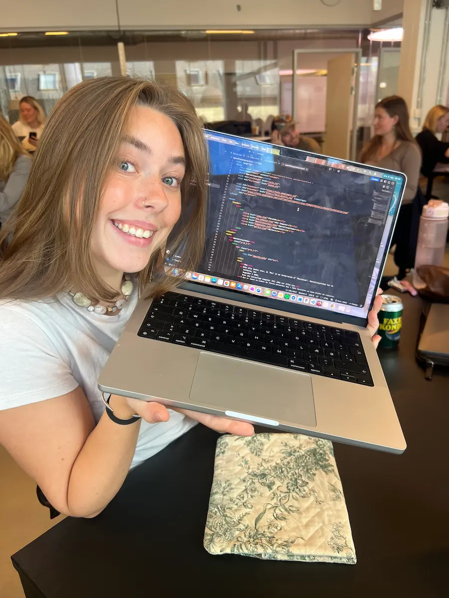

Min Computer

Type
Min compuer er købt i dyre domme for 2 år siden og jeg er meget glad for den. Jeg bruger den til mange forskellige ting bla. skole og til at se film og serier yay. Før jeg købte denne havde jeg en macbook air som jeg fik i konfirmationsgave. Den virkede desværre ikke så godt mere så derfor købte jeg denne !
Specifikationer
- Min opløsning er 3024 × 1964px og i browseren er den 1472px i bredden
- Min computer har 16GB
- Min computer er en "macbook pro 14" fra 2024
- Min computer er i sølv